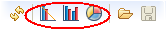

Use a variety of charts to help you monitor the progress of your project.
- The Burndown chart shows the estimated amount of work that remains to be done in an iteration, compared with the work originally estimated.
- The Open by Priority chart helps you check that your team is working on the optimal mix of artifacts.
- The Open vs. Closed chart is useful when you just want a raw count of the number of work items you are looking at.
- The Capacity chart shows the project team's judgment of how much work can be done with the resources available and the time period represented in the planning folder.
In the CollabNet Sites view, right-click a planning folder, select Charts and then a chart type.
If you're using the planning board, click one of these icons for the corresponding chart.
